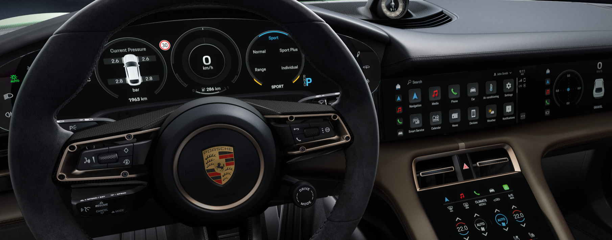
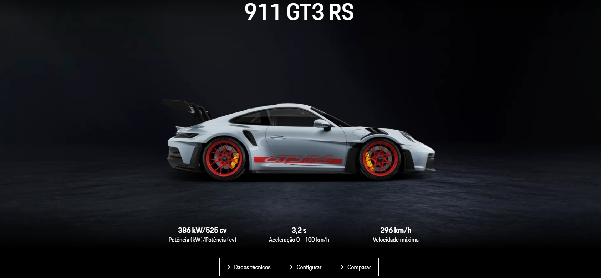

Origem da Porsche:
Ferdinand Porsche, um engenheiro austríaco com vasta experiência na indústria automotiva, fundou sua própria empresa de engenharia, a "Dr. Ing. h.c. F. Porsche GmbH", em Stuttgart, Alemanha, em 1931. Inicialmente focada em serviços de consultoria e desenvolvimento de veículos para outras montadoras, a empresa recebeu uma encomenda do governo alemão em 1938 para projetar um carro de baixo custo, resultando no icônico Volkswagen Beetle. Após a Segunda Guerra Mundial, Ferdinand e seu filho, Ferry Porsche, lançaram o primeiro carro de produção da marca Porsche, o Porsche 356, em 1948. Esse modelo foi um sucesso e estabeleceu a reputação da Porsche como fabricante de carros esportivos de alto desempenho.
Porsche, Uma marca de Sucesso:
Porsche é uma marca automotiva de renome mundial, conhecida por seu sucesso indiscutível na indústria automobilística. Sua reputação é fundamentada em uma combinação excepcional de desempenho e engenharia de alta qualidade, enraizada em uma herança rica e uma tradição de excelência no automobilismo. Desde os primeiros dias de corrida até os modernos carros de rua, a Porsche tem sido sinônimo de inovação e tecnologia de ponta, incorporando sistemas híbridos e elétricos avançados, segurança de última geração e design distintivo em seus modelos. Com linhas elegantes e proporções equilibradas, os carros Porsche são instantaneamente reconhecíveis e desejados por entusiastas em todo o mundo. Além disso, o sucesso comercial e financeiro da Porsche reflete sua base leal de clientes e sua capacidade de oferecer uma ampla gama de modelos que atendem a diversos segmentos do mercado. Em suma, a Porsche continua a se destacar como uma das marcas mais prestigiadas e respeitadas, impulsionada pela paixão pela condução e pela busca incessante pela perfeição.